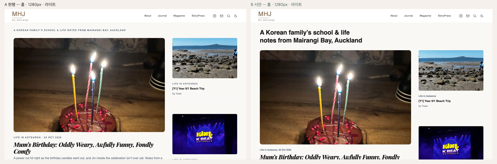
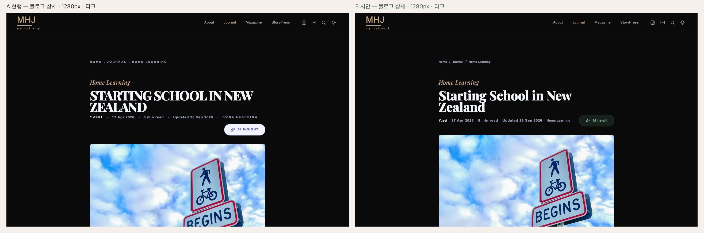
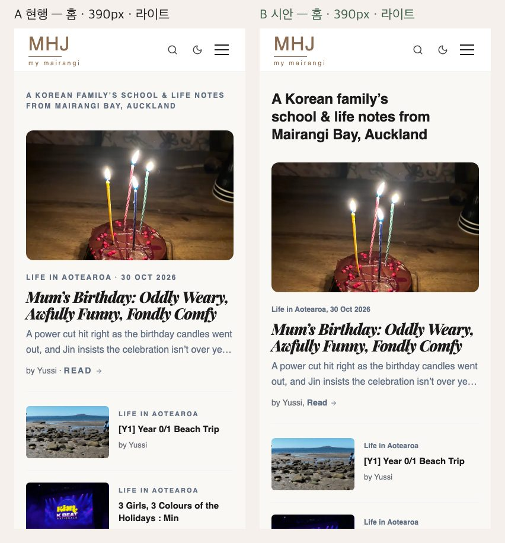
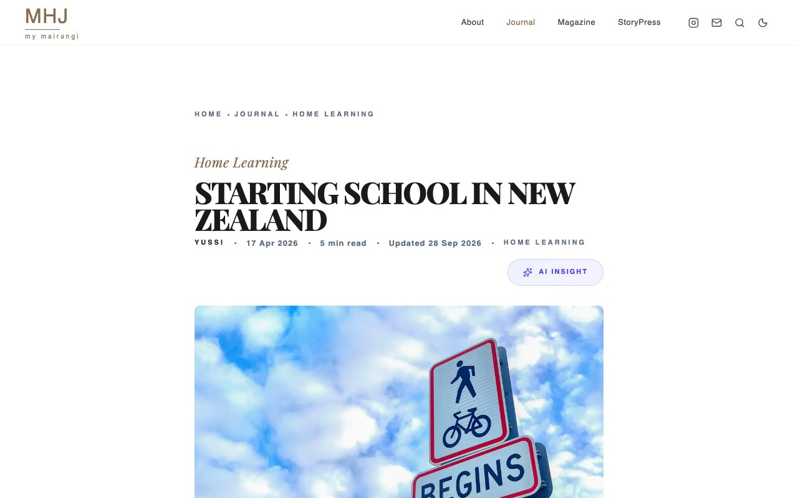
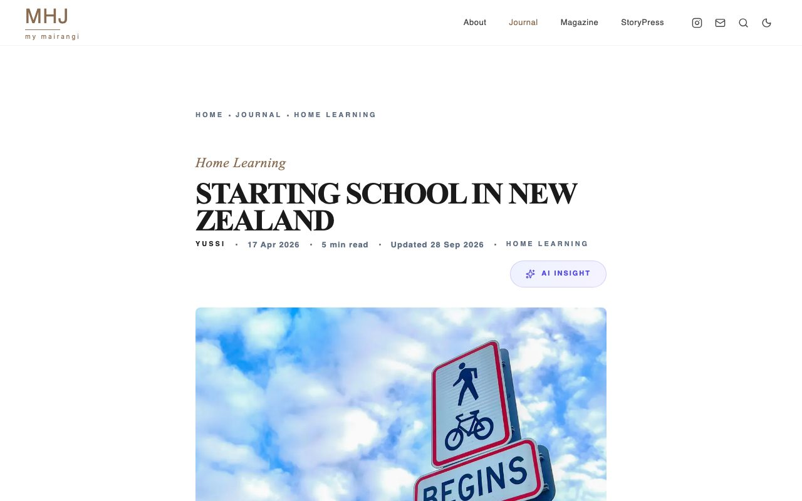
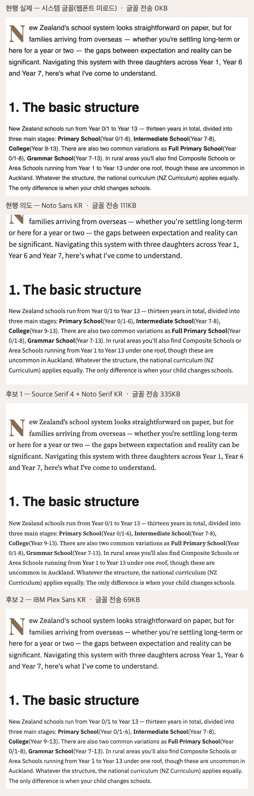

<title>MHJ 디자인 업그레이드</title>
<meta name="claude:viewport-fit-sides" content="cover">
<link rel="preconnect" href="https://fonts.googleapis.com">
<link rel="preconnect" href="https://fonts.gstatic.com" crossorigin>
<link rel="stylesheet" href="https://fonts.googleapis.com/css2?family=IBM+Plex+Sans+KR:wght@400;500;600;700&family=IBM+Plex+Mono:wght@400;500&family=Playfair+Display:wght@400&display=swap">
<style>
/* 레이아웃: 한 단 읽기 문서(최대 46rem). 결정 → 숫자 → 단계 → 하지 않을 것 순서. 표·이미지는 각자 가로 스크롤 상자 안. */
:root {
  --bg: #FFFFFF; --surface: #F7F6F3; --ink: #1E1E1E; --ink-2: #5A6158; --rule: #E2E0DA;
  --green: #3E5F4A; --green-wash: #EEF3EF; --brown: #8A6B4F; --warn: #8A4B12; --warn-wash: #FBF1E6;
  --body: "IBM Plex Sans KR", "Apple SD Gothic Neo", "Malgun Gothic", system-ui, sans-serif;
  --mono: "IBM Plex Mono", ui-monospace, "SFMono-Regular", Menlo, monospace;
  --mark: "Playfair Display", Georgia, serif;
}
@media (prefers-color-scheme: dark) {
  :root:not([data-theme="light"]) { --bg: #121411; --surface: #1A1D19; --ink: #ECEEE9; --ink-2: #A9B1A6; --rule: #2E332D;
    --green: #8FB39B; --green-wash: #18201B; --brown: #C9A882; --warn: #E3B07A; --warn-wash: #2A2015; color-scheme: dark; }
}
:root[data-theme="dark"] { --bg: #121411; --surface: #1A1D19; --ink: #ECEEE9; --ink-2: #A9B1A6; --rule: #2E332D;
  --green: #8FB39B; --green-wash: #18201B; --brown: #C9A882; --warn: #E3B07A; --warn-wash: #2A2015; color-scheme: dark; }
* { box-sizing: border-box; }
body {
  margin: 0; background: var(--bg); color: var(--ink); font-family: var(--body); font-size: 16.5px; line-height: 1.7;
  word-break: keep-all; overflow-wrap: break-word;
  padding-left: max(16px, env(safe-area-inset-left, 0px)); padding-right: max(16px, env(safe-area-inset-right, 0px)); padding-block: 0 64px;
}
main { max-width: 46rem; margin: 0 auto; }
header { padding-block: 40px 8px; border-bottom: 1px solid var(--rule); margin-bottom: 8px; }
.mark { font-family: var(--mark); color: var(--brown); font-size: 1.5rem; letter-spacing: 0.04em; line-height: 1; }
.mark small { display: block; font-size: 0.62rem; letter-spacing: 0.28em; margin-top: 4px; }
h1 { font-size: clamp(1.7rem, 4.2vw, 2.3rem); line-height: 1.25; margin: 20px 0 12px; font-weight: 700; text-wrap: balance; }
h2 { font-size: 1.35rem; line-height: 1.35; margin: 48px 0 14px; font-weight: 700; text-wrap: balance; }
h3 { font-size: 1.08rem; margin: 28px 0 8px; font-weight: 600; text-wrap: balance; }
p { margin: 0 0 12px; }
.lede { font-size: 1.12rem; color: var(--ink); }
.meta { color: var(--ink-2); font-size: 0.9rem; }
a { color: var(--green); text-underline-offset: 3px; }
a:focus-visible, summary:focus-visible { outline: 2px solid var(--green); outline-offset: 2px; }
code, .path { font-family: var(--mono); font-size: 0.86em; background: var(--surface); padding: 1px 5px; border-radius: 4px; }
.tbl { overflow-x: auto; border: 1px solid var(--rule); border-radius: 6px; margin: 12px 0 18px; }
table { border-collapse: collapse; width: 100%; font-size: 0.9rem; }
th, td { text-align: left; padding: 9px 12px; border-bottom: 1px solid var(--rule); vertical-align: top; }
th { color: var(--ink-2); font-weight: 600; background: var(--surface); }
tr:last-child td { border-bottom: 0; }
td.n, th.n { text-align: right; font-variant-numeric: tabular-nums; white-space: nowrap; }
.decisions { display: grid; gap: 12px; margin: 14px 0; }
.dec { border: 1px solid var(--rule); border-radius: 6px; padding: 14px 16px; background: var(--bg); }
.dec .q { font-weight: 600; display: flex; gap: 10px; align-items: baseline; flex-wrap: wrap; }
.dec .id { font-family: var(--mono); color: var(--ink-2); font-size: 0.85rem; }
.rec { display: inline-block; background: var(--green-wash); color: var(--green); border: 1px solid var(--green); border-radius: 4px; padding: 0 8px; font-size: 0.88rem; font-weight: 600; }
.dec p { margin: 6px 0 0; color: var(--ink-2); font-size: 0.94rem; }
.note { background: var(--warn-wash); border-left: 3px solid var(--warn); padding: 12px 14px; border-radius: 0 6px 6px 0; margin: 16px 0; font-size: 0.95rem; }
.note b { color: var(--warn); }
.nums { display: grid; grid-template-columns: repeat(auto-fit, minmax(9.5rem, 1fr)); gap: 10px; margin: 14px 0; }
.num { border: 1px solid var(--rule); border-radius: 6px; padding: 12px 14px; min-width: 0; }
.num b { display: block; font-size: 1.45rem; font-variant-numeric: tabular-nums; line-height: 1.2; }
.num span { color: var(--ink-2); font-size: 0.85rem; }
figure { margin: 16px 0; }
figure img { display: block; width: 100%; height: auto; border: 1px solid var(--rule); border-radius: 4px; }
figcaption { color: var(--ink-2); font-size: 0.86rem; margin-top: 6px; }
.two { display: grid; grid-template-columns: repeat(2, minmax(0, 1fr)); gap: 12px; }
@media (max-width: 560px) { .two { grid-template-columns: 1fr; } }
.stage { border-top: 1px solid var(--rule); padding-top: 4px; }
.stage h3 { display: flex; gap: 10px; align-items: baseline; flex-wrap: wrap; }
.tag { font-size: 0.78rem; font-weight: 600; border-radius: 4px; padding: 0 7px; border: 1px solid var(--rule); color: var(--ink-2); }
.tag.go { color: var(--green); border-color: var(--green); }
ul { padding-left: 1.2em; margin: 6px 0 12px; }
li { margin: 3px 0; }
details { border: 1px solid var(--rule); border-radius: 6px; padding: 10px 14px; margin: 12px 0; }
summary { cursor: pointer; font-weight: 600; color: var(--green); }
@media (prefers-reduced-motion: reduce) { * { scroll-behavior: auto !important; } }
</style>

<main>
<header>
  <div class="mark">MHJ<small>my mairangi</small></div>
  <h1>MHJ 디자인 업그레이드 기획안</h1>
  <p class="lede">가족이 찍은 사진과 이야기는 주인공 자리에 그대로 둡니다. 그 위에 덧씌운 "기본값처럼 보이는 꾸밈" 세 가지만 걷어 냅니다. Tailwind 인디고·보라, 자간 넓은 대문자 꼬리표, 가운뎃점 메타 문구입니다. 그 전에 방문자에게 웹폰트가 아예 안 내려가는 회귀부터 고칩니다.</p>
  <p class="meta">2026-11-03, MHJ 자가검증 세션 작성, 계획 문서이며 화면 코드 변경은 0입니다. 근거: <a href="https://claude.ai/artifact/KaBasm5q5VJ4Ja6zooqbUJ">AI 티 없는 디자인 조사서</a>, 틀: <a href="https://claude.ai/artifact/SsXjvYj2wTCRKmbXWn3d2W">StoryPress 기획안</a></p>
</header>

<h2 id="decide">PeNnY가 정할 것</h2>
<p>결정마다 추천을 하나씩 적었습니다. D1은 5초 테스트 결과를 본 뒤에 정하는 것을 권합니다.</p>
<div class="decisions">
  <div class="dec"><div class="q"><span class="id">D1</span>시안: A 현행, B 시안 <span class="rec">추천 B</span></div>
    <p>B는 강조색을 그린으로 바꾸고, 홈 h1을 문장형 제목으로, 메타의 대문자·가운뎃점을 없앤 안입니다. 같은 방식으로 검사하면 홈 44건이 14건, 블로그 37건이 27건이 됩니다. 인디고·대문자·가운뎃점은 세 페이지 모두 0이 됩니다. 판별표 해당 축은 3에서 1로 줍니다. <b>5초 테스트 응답이 아직 0건이라</b>, 사람 3명 이상의 응답에서 B가 "무엇을 하는 곳인가"를 A보다 덜 맞히지 않을 때 착수합니다.</p></div>
  <div class="dec"><div class="q"><span class="id">D2</span>다크 모드 강조색: 파생 그린 <code>#8FB39B</code>, 브랜드 키트 Brown Dark <code>#C9A882</code> <span class="rec">추천 #8FB39B</span></div>
    <p>라이트 <code>#3E5F4A</code>와 색상·채도가 같아 "누를 곳은 초록"이 두 테마에서 같습니다. 다크 바탕 명암비는 8.57 / 7.95 / 7.22입니다. <code>#C9A882</code>는 이미 로고와 Most Read 번호 색이라 장식과 누를 곳이 섞입니다. 승인하면 브랜드 가이드 색 표에 "Green Light" 한 줄을 더합니다.</p></div>
  <div class="dec"><div class="q"><span class="id">D3</span>사이트 규칙서 개정 <span class="rec">추천 개정 (D1이 B일 때)</span></div>
    <p>지금 화면은 <code>DESIGN_RULES.md</code> §6.4("인디고는 AI Insight에만")와 §5.2("라벨은 대문자·자간 2px")를 지키고 있습니다. B는 위반을 고치는 안이 아니라 규칙을 바꾸는 안입니다. 규칙서를 먼저 고쳐야 다음 작업이 되돌리지 않습니다. 초안은 아래 <a href="#rules">규칙서 개정 초안</a>에 있습니다.</p></div>
  <div class="dec"><div class="q"><span class="id">D4</span>본문 서체: Noto Sans KR 유지, IBM Plex Sans KR, Source Serif 4 <span class="rec">추천 Noto Sans KR 유지</span></div>
    <p>방문자는 지금 Noto가 아니라 시스템 글꼴을 봅니다(M0). M0만 고치면 정해 둔 글꼴이 처음으로 보입니다. Noto는 과사용 글꼴 목록에 없고, 코드가 쓰는 400~900 굵기가 모두 있습니다. AI 티는 본문 서체가 아니라 라벨과 색에 있었습니다. 읽기 개선은 한 줄 길이(약 100자 → 65~75자)로 얻습니다.</p></div>
  <div class="dec"><div class="q"><span class="id">D5</span>다크 바탕 <code>#0A0A0A</code> <span class="rec">추천 유지</span></div>
    <p>공식 스킬이 꼽은 신호는 "근흑 + 형광 강조 하나"라는 조합입니다. MHJ 다크에는 형광 강조가 없고, B에서 강조색이 차분한 그린이 되면 조합이 성립하지 않습니다. 바꾸면 다크 전 화면을 다시 재야 하는데 얻는 것이 적습니다.</p></div>
  <div class="dec"><div class="q"><span class="id">D6</span>기사 제목 Playfair 900 이탤릭 <span class="rec">추천 유지</span></div>
    <p>검사기 지적은 섹션 제목 1건("You Might Also Like")뿐입니다. 홈 기사 제목의 이탤릭은 사진 다음으로 MHJ를 알아보게 하는 얼굴입니다. 섹션 제목 h2의 이탤릭만 M3에서 따로 봅니다.</p></div>
  <div class="dec"><div class="q"><span class="id">D7</span>원문이 대문자인 꼬리표 "FROM OUR GALLERY", "Continue Reading", "Join the conversation" <span class="rec">추천 삭제</span></div>
    <p>바로 아래 제목이 같은 말을 합니다. Impeccable은 제목 위 꼬리표를 의뢰서로도 되살릴 수 없는 금지로 둡니다. 원문 글자가 대문자라 B 목업에서도 남았습니다.</p></div>
</div>
<div class="note"><b>5초 테스트: 응답 0건, 사람 검증 대기.</b> <a href="https://claude.ai/artifact/9VzcuqfMSaiJNpSF4JXZJB">MHJ 홈 5초 테스트</a>를 진행자 기기에서 열고 3명 이상에게 보여 주세요. 지금은 비공개라, 응답자 기기에서 직접 열게 하려면 Share 메뉴로 공유해야 합니다.</div>

<h2 id="numbers">자가검증 결과</h2>
<div class="nums">
  <div class="num"><b>43 / 40</b><span>검사기 지적, 홈 / 블로그 (오탐 0)</span></div>
  <div class="num"><b>59 / 49 / 43</b><span>대문자 요소, 홈 / 블로그 / 매거진</span></div>
  <div class="num"><b>16 / 2 / 6</b><span>보이는 가운뎃점 문구</span></div>
  <div class="num"><b>44 → 14</b><span>홈 검사기, A → B (같은 방식)</span></div>
</div>
<ul>
  <li><b>Impeccable 4.8.0, 페이지당 1회.</b> 83건 가운데 진짜 문제 77, 디자인 범위 밖 1(본문 줄표 25개), 의도된 선택 5("my mairangi" 로고 문구, Playfair 이탤릭 섹션 제목)입니다. 큰 덩어리는 10px 라벨 46건, 블로그 본문 한 줄 96~103자 16건, 제목 위 꼬리표 4건입니다.</li>
  <li><b>검사기가 못 보는 것.</b> 규칙 62개에 "대문자 h1", "가운뎃점 메타", "Tailwind 인디고"를 잡는 규칙이 없습니다. 그래서 DOM 숫자가 근거입니다.</li>
  <li><b>홈 h1</b>은 12px·900·대문자·자간 2px 회색 문장입니다. 사이트가 무엇인지 말하는 유일한 문장이 화면에서 가장 작고 옅습니다.</li>
  <li><b>인디고는 면적이 아니라 자리가 문제입니다.</b> 칠해진 요소는 1 / 7 / 1개뿐입니다(포커스 테두리, AI Insight, 본문 링크). 다만 누를 곳의 색이 Tailwind 기본값입니다. AI Insight 버튼에는 보라 그라데이션이 있고, 다크 모드에서도 연보라 그대로 떠 있습니다.</li>
  <li><b>전수표</b>(관리자 제외, 행 수 = grep 건수): 인디고·보라 67행(교체 대상 42), 브라운·그린 75행(전부 유지), 대문자 217행(공개 153), 가운뎃점 79행(화면 문구 23).</li>
</ul>
<div class="tbl"><table>
  <thead><tr><th>판별표 축</th><th>A 현행</th><th>B 시안</th></tr></thead>
  <tbody>
    <tr><td>색과 바탕</td><td>해당(약)</td><td>비해당</td></tr>
    <tr><td>글자</td><td><b>해당</b></td><td>해당(약): Playfair 굵은 이탤릭, M0</td></tr>
    <tr><td>구조와 장식</td><td>해당(일부)</td><td>비해당</td></tr>
    <tr><td>움직임</td><td>비해당</td><td>비해당</td></tr>
    <tr><td>글과 증거</td><td>비해당</td><td>비해당</td></tr>
  </tbody>
</table></div>

<h3>A·B 비교</h3>
<p>B는 코드를 바꾸지 않고 라이브 페이지에 CSS를 덧입혀 찍었습니다. 글자로 박힌 가운뎃점만 짧은 스크립트로 쉼표로 바꿨습니다. 사진과 배치는 그대로입니다.</p>
<figure><figcaption>홈 1280 라이트. 왼쪽 A, 오른쪽 B</figcaption></figure>
<div class="two">
  <figure><figcaption>블로그 1280 다크. B의 AI Insight 버튼이 테마를 따름</figcaption></figure>
  <figure><figcaption>홈 390 폰</figcaption></figure>
</div>
<div class="tbl"><table>
  <thead><tr><th>검사기 규칙</th><th class="n">홈 A</th><th class="n">홈 B</th><th class="n">블로그 A</th><th class="n">블로그 B</th></tr></thead>
  <tbody>
    <tr><td>작은 기능 글자 (10px)</td><td class="n">39</td><td class="n">10</td><td class="n">14</td><td class="n">6</td></tr>
    <tr><td>본문 줄 길이</td><td class="n">0</td><td class="n">0</td><td class="n">14</td><td class="n">14</td></tr>
    <tr><td>제목 위 꼬리표</td><td class="n">1</td><td class="n">0</td><td class="n">3</td><td class="n">0</td></tr>
    <tr><td>그 밖</td><td class="n">4</td><td class="n">4</td><td class="n">6</td><td class="n">7</td></tr>
    <tr><th>합계</th><th class="n">44</th><th class="n">14</th><th class="n">37</th><th class="n">27</th></tr>
  </tbody>
</table></div>
<p class="meta">A는 B와 같은 CDP 방식(떠 있는 페이지를 검사)으로 한 번 더 돌린 대조군입니다. URL 방식으로는 홈 43, 블로그 40이었습니다. B에서 새로 생긴 2건(FAQ 제목의 넓은 자간·11px)은 목업 CSS가 그 선택자를 빠뜨린 탓이라 M2에 넣었습니다.</p>

<h3>새로 찾은 문제: 방문자에게 웹폰트가 안 내려갑니다</h3>
<p>빌드된 CSS에서 Inter 글꼴 규칙이 Google Fonts <code>@import</code>보다 앞에 놓여, 브라우저가 <code>@import</code>를 버립니다. 그래서 Noto Sans KR은 한 번도 그려지지 않습니다. Playfair는 그 글꼴을 설치한 기기에서만 보입니다. 위 캡처는 Playfair가 깔린 Mac 기준이라 실제 방문자 화면보다 좋아 보입니다.</p>
<div class="two">
  <figure><figcaption>Playfair가 설치된 기기</figcaption></figure>
  <figure><figcaption>일반 방문자 재현: 제목이 Times 계열</figcaption></figure>
</div>

<h2 id="stages">업그레이드 단계</h2>
<p>각 단계는 시안 확인, PeNnY 결재, 구현, 3폭 × 2테마 전후 캡처, 코드 리뷰와 검증, push 결재 순으로 갑니다. 단계마다 수정 파일은 5개 이하입니다.</p>

<div class="stage">
<h3>M0 웹폰트 회귀 수정 <span class="tag go">진행 중, PR #179</span></h3>
<p>별도 세션이 <a href="https://github.com/penjuntv/MHJ-homepage/pull/179">penjuntv/MHJ-homepage#179</a>를 열었습니다(머지 전). 라이브에서 <code>fonts.gstatic.com</code> 요청이 생기고, 본문이 Noto Sans KR 웹폰트로 그려지면 끝입니다. M1의 전후 비교는 M0 배포 뒤 기준선으로 다시 찍어, 글꼴 변화가 시안 효과에 섞이지 않게 합니다.</p>
</div>

<div class="stage">
<h3>M1 홈 첫 화면과 메타 <span class="tag">D1·D2·D3·D7 뒤</span></h3>
<div class="tbl"><table>
  <thead><tr><th>파일</th><th>바꿀 것</th></tr></thead>
  <tbody>
    <tr><td><span class="path">docs/DESIGN_RULES.md</span> (+ 브랜드 가이드 한 줄)</td><td>§5.2·§6.4·§10.1 개정, 새 항목 2개</td></tr>
    <tr><td><span class="path">app/globals.css</span></td><td><code>--accent</code> :45 → <code>#3E5F4A</code>, :123 → <code>#8FB39B</code>. <code>--callout-bg</code>, 홈 기둥 라벨 대문자 해제</td></tr>
    <tr><td><span class="path">app/(public)/page.tsx</span></td><td>h1(:316)을 문장형 제목으로. 메타 가운뎃점 7줄 → 쉼표. 대문자 라벨 18행</td></tr>
    <tr><td><span class="path">components/InstagramFeed.tsx</span></td><td>"FROM OUR GALLERY" 꼬리표 삭제, 태그 10px → 12px</td></tr>
    <tr><td><span class="path">components/NewsletterCTA.tsx</span></td><td>구독 안내문 11px → 13px, 라벨 대문자 해제</td></tr>
  </tbody>
</table></div>
<p><b>성공 기준</b></p>
<ul>
  <li>홈 DOM: 인디고 0, 보이는 가운뎃점 0, 대문자 변환 요소 0. h1은 24px 이상이고 본문 글자색.</li>
  <li>검사기 홈 1회: 꼬리표 0, 작은 기능 글자 10 이하(현 39), 작은 본문 글자 0.</li>
  <li>저장소 명암·접근성 검사 0, 홈 3폭 × 2테마 전후 12장, 빌드와 타입 검사 통과.</li>
</ul>
</div>

<div class="stage">
<h3>M2 기사 읽기 화면 <span class="tag">M1 뒤</span></h3>
<div class="tbl"><table>
  <thead><tr><th>파일</th><th>바꿀 것</th></tr></thead>
  <tbody>
    <tr><td><span class="path">components/AiInsight.tsx</span></td><td>인디고·보라 9행 → 그린 단색 면, 그라데이션 삭제</td></tr>
    <tr><td><span class="path">app/(public)/blog/[slug]/page.tsx</span></td><td>h1 대문자 해제, 메타 3px 점 제거, "Continue Reading" 꼬리표 삭제</td></tr>
    <tr><td><span class="path">app/globals.css</span></td><td>본문 한 줄 65~75자(현 약 100자), FAQ 제목 자간, AI 카드 다크, <code>.ai-reflection</code> 반경 32px → 12px(카드 반경 규칙 위반 해소)</td></tr>
    <tr><td><span class="path">app/(public)/blog/[slug]/CommentSection.tsx</span></td><td>"Join the conversation" 꼬리표 삭제, 폼 라벨 10px → 13px</td></tr>
  </tbody>
</table></div>
<p><b>본문 서체 비교 (D4 근거).</b> 같은 기사의 같은 문단을 서체만 바꿔 찍었습니다. 글꼴 전송량은 두 번 잰 범위입니다.</p>
<div class="tbl"><table>
  <thead><tr><th>안</th><th>그려진 글꼴</th><th class="n">글꼴 전송</th></tr></thead>
  <tbody>
    <tr><td>현행 실제</td><td>시스템 글꼴(웹폰트 없음)</td><td class="n">0KB</td></tr>
    <tr><td><b>현행 의도 Noto Sans KR (추천)</b></td><td>웹폰트</td><td class="n">67~111KB</td></tr>
    <tr><td>후보 1 Source Serif 4 + Noto Serif KR</td><td>웹폰트</td><td class="n">261~338KB</td></tr>
    <tr><td>후보 2 IBM Plex Sans KR</td><td>웹폰트, 라틴·한글 한 가족</td><td class="n">69~98KB</td></tr>
  </tbody>
</table></div>
<details><summary>서체 비교판 보기 (1280, 위에서부터 현행 실제, Noto, Source Serif, IBM Plex)</summary>
  <figure></figure>
</details>
<p>Source Serif는 잡지다운 온기가 있지만 전송량이 약 3배이고, 제목 Playfair와 세리프끼리 겹쳐 제목과 본문의 대비가 약해집니다. IBM Plex Sans KR은 900 굵기가 없어 라벨·제목 굵기를 함께 바꿔야 합니다. 그래서 서체는 그대로 두고 줄 길이를 고치는 것을 추천합니다.</p>
<p>본문 안내 상자의 낮은 명암(2.4:1, 2건)은 코드가 아니라 DB의 글 본문 안에 있습니다. 글 본문 수정이 필요해 M2와 따로 결재받습니다.</p>
<p><b>성공 기준</b></p>
<ul>
  <li>검사기 블로그 1회: 줄 길이 0(현 16), 꼬리표 0, 넓은 자간·작은 본문 글자 0, 작은 기능 글자 4 이하.</li>
  <li>DOM: 인디고·보라 0. 다크에서 AI 버튼이 테마 면을 따름.</li>
  <li>블로그 3폭 × 2테마 전후 12장, 명암·접근성 검사 0, 빌드와 타입 검사 통과.</li>
</ul>
</div>

<div class="stage">
<h3>M3 매거진과 목록 <span class="tag">M2 뒤</span></h3>
<div class="tbl"><table>
  <thead><tr><th>파일</th><th>바꿀 것</th></tr></thead>
  <tbody>
    <tr><td><span class="path">components/BlogLibrary.tsx</span></td><td>대문자 15행, 가운뎃점 2줄</td></tr>
    <tr><td><span class="path">components/MagazineViewer.tsx</span></td><td>인디고 하드코딩 7행 → 강조색 토큰, 가운뎃점 9줄, 대문자 14행</td></tr>
    <tr><td><span class="path">components/magazine/MagazineIssueDetail.tsx</span></td><td>"Mairangi Bay, Auckland, New Zealand" 등 가운뎃점 3줄</td></tr>
    <tr><td><span class="path">components/MagazineShelf.tsx</span></td><td>대문자 6행, 책등 날짜 표시 형식</td></tr>
    <tr><td><span class="path">app/(public)/blog/tag/[tag]/page.tsx</span></td><td>가운뎃점 1줄, 대문자 3행</td></tr>
  </tbody>
</table></div>
<p>섹션 제목 h2의 이탤릭("You Might Also Like" 등)을 정체로 바꿀지는 이 단계에서 시안 두 개로 봅니다. <b>성공 기준</b>: 목록·매거진·이슈 상세의 인디고 0, 보이는 가운뎃점 0, 대문자 변환 0(매거진 지면 템플릿 제외), 3페이지 × 3폭 × 2테마 전후 캡처, 검사 0.</p>
</div>

<h2 id="rules">규칙서 개정 초안 (D3)</h2>
<div class="tbl"><table>
  <thead><tr><th>위치</th><th>현행</th><th>제안</th></tr></thead>
  <tbody>
    <tr><td>§6.4 색 원칙</td><td>인디고 액센트는 AI Insight 버튼, 인터랙티브 요소에만</td><td>강조색은 MHJ Green(라이트 <code>#3E5F4A</code> / 다크 <code>#8FB39B</code>). 링크·포커스·AI Insight·현재 위치 표시에만. 그라데이션 금지</td></tr>
    <tr><td>§6.1·§6.2 토큰</td><td><code>--accent</code> <code>#4F46E5</code> / <code>#818CF8</code></td><td>위 값으로. 명암비 7.14 / 6.74 / 6.31 / 8.57 / 7.95 / 7.22</td></tr>
    <tr><td>§5.2 크기</td><td>라벨 11px, 자간 2px, uppercase, 회색</td><td>라벨 12px, 자간 0.01em, 문장형(대문자 변환 금지)</td></tr>
    <tr><td>§10.1 카드 도식</td><td>CATEGORY 11px uppercase</td><td>Category 12px</td></tr>
    <tr><td>새 항목</td><td>(없음)</td><td>메타는 쉼표나 줄바꿈으로 나눈다. 가운뎃점·3px 점 구분자를 쓰지 않는다</td></tr>
    <tr><td>새 항목</td><td>(없음)</td><td>제목 위 꼬리표를 쓰지 않는다. 정보가 있는 라벨(예: "Issue 07")만 예외</td></tr>
  </tbody>
</table></div>

<h2 id="keep">바꾸지 않는 것</h2>
<ul>
  <li><b>사진이 주인공.</b> 홈 첫 화면 사진의 비율과 크기, 카드 사진은 그대로입니다.</li>
  <li><b>호버 규칙.</b> 투명도와 미세 확대(1.02~1.03)만 씁니다. 위로 뜨는 이동과 채도 변화는 금지입니다.</li>
  <li><b>카드 반경 12px 이하</b>(블로그 6px). 32px 이상 금지. <code>.ai-reflection</code>의 32px는 오히려 M2에서 바로잡습니다.</li>
  <li><b>다크 모드는 <code>globals.css</code> 변수만.</b> 새 색은 토큰으로만 넣습니다.</li>
  <li><b>브랜드 워드마크와 "my mairangi" 로고 문구</b>(10px, 넓은 자간)는 로고 규격이라 그대로입니다.</li>
  <li><b>매거진 지면 템플릿, StoryPress 제품 랜딩 팔레트, 관리자 화면.</b> 관리자 화면은 강조색 토큰을 쓰지 않아 교체가 번지지 않습니다.</li>
  <li>이미지 생성 AI 호출과 새 사진은 0입니다. 있는 가족 사진만 씁니다.</li>
</ul>

<h2 id="risks">위험과 대응</h2>
<ul>
  <li><b>5초 테스트 0건.</b> 지금 추천은 기계 검사와 판별표 근거뿐입니다. 사람 3명 이상의 결과 전에는 M1을 시작하지 않습니다. 응답자가 적어 방향 확인용이지 통계가 아닙니다.</li>
  <li><b>빈약해 보일 위험.</b> 대문자 꼬리표가 주던 매거진 같은 긴장감이 빠집니다. 홈 h1의 크기 대비(12px → 33px)와 사진이 그 자리를 채웁니다. 5초 테스트의 "가장 먼저 눈에 띈 것"으로 확인합니다.</li>
  <li><b>M0와 섞임.</b> 글꼴이 바뀌면 인상이 크게 달라집니다. M1 비교는 M0 배포 뒤 기준선으로 다시 찍습니다.</li>
  <li><b>검사기는 신호입니다.</b> 점수를 올리려고 고치지 않습니다. 남는 건수는 판정표로 설명합니다.</li>
  <li><b>아이 실명.</b> 모든 단계의 캡처·문서·테스트 이미지에서 실명 검사 0을 유지합니다.</li>
</ul>

<h2 id="next">다음 행동</h2>
<h3>PeNnY</h3>
<ul>
  <li>5초 테스트를 3명 이상에게 진행하기(처음 보는 분 포함).</li>
  <li>D1~D7 결정하기. D1은 테스트 결과를 본 뒤에.</li>
  <li>M0 PR #179 머지와 배포 결재(별도 세션).</li>
</ul>
<h3>Claude</h3>
<ul>
  <li>완료(2026-11-03): 기준선 캡처 18장, 기계 자가검증, 전수표 438행, 시안 B 목업 18장, 5초 테스트 페이지, 이 기획안. 커밋은 문서와 캡처만, push 0.</li>
  <li>결정이 나면: M1 지시서, M0 뒤 기준선 재캡처, 구현, 3폭 × 2테마 전후 비교, 코드 리뷰·검증, push 결재 요청.</li>
</ul>

<h2 id="sources">근거 자료</h2>
<p>저장소 <span class="path">docs/qa/2026-11-03-self-check/</span>에 있습니다. STEP 1 자가검증(검사기 판정표·DOM·5축·웹폰트 회귀), STEP 2 전수표(438행·명암비), STEP 3 목업 비교(톤 테스트·회귀 기록), STEP 4 5초 테스트(저장 시험 기록), <span class="path">UPGRADE_PLAN.md</span>(이 페이지의 원문)와 스크립트·검사기 JSON입니다.</p>
</main>
